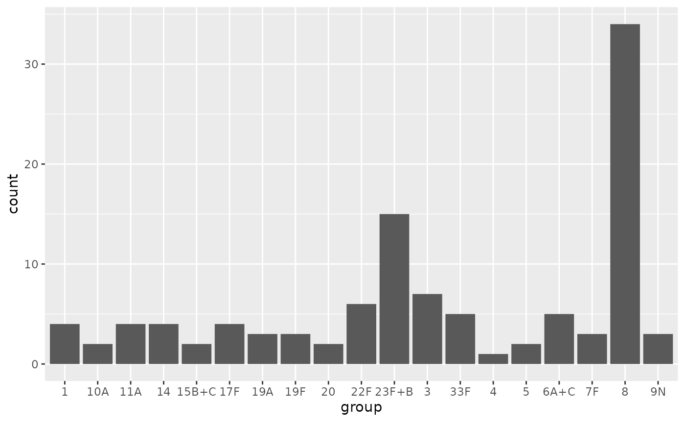

Pneumococcus urinary antigen data
uad-data.Rmd
# The data input directory on my development machine:
options("avoncap.input" = "~/Data/avoncap/")Data loading
The raw data is expected to be in the urine-antigens
subfolder
fs::dir_tree(path = avoncap::input("urine-antigens"))
#> /home/vp22681/Data/avoncap/urine-antigens
#> ├── 2022-09-15
#> │ └── uad-cases.csv
#> ├── B1851202_SAP V1.0-27Sep2021_Final.pdf
#> ├── README.md
#> └── Table Template Serotype Distribution Scientific Affairs Proposal_FINAL.docxThe data is distributed as a single file with both cases and controls together without distinguishing features. There are BinaxNOW and serotype specific UAD tests and their results. Not all tests are run for every person.
most_recent_files("urine-antigens")
#> # A tibble: 1 × 7
#> filename directory path date hospital study_year filetype
#> <chr> <chr> <fs::path> <date> <chr> <int> <chr>
#> 1 uad-cases urine-antigens …ad-cases.csv 2022-09-15 NA NA csv
rawUA = load_data("urine-antigens")
#> using cached item: ~/.cache/avoncap/data-969416e3870a1ceaa091ca0c1e17ce42-9c2e146f40e21e93dc39773001568d59.rdaData normalisation
The data can be subdivided into serotype versus
binax groups and normalisation handles processing the
serotype to be in the format ^[0-9]+[A-Z]$, aligning format
of the patient identifier to match [0-9]{4}-[0-9]+. And
processing test dates (which are supplied in the %e-%b-%y
format).
normUA = rawUA %>% normalise_data(instrument = "serotype", .nocache=TRUE)
#> Normalising data using: normalise.urine_antigens.serotype
#> caching item: ~/.cache/avoncap/norm-0ef4812a2d1bc751062531c384a2b89e-5100bb5656b566355d59ce58f383e4c0.rda
#> mapping .RESULT to pneumo.urine_antigen_result
#> mapping .EVENT_DATE to pneumo.test_date
#> mapping .ANALYSIS to pneumo.urine_antigen_test
#> mapping .SUBJECT to admin.consented_record_number
#> mapping .BARCODE to pneumo.urine_antigen_sample_id
#> Mapped 5 columns
#> Did not map 9 columns
normBinax = rawUA %>% normalise_data(instrument = "binax", .nocache=TRUE)
#> Normalising data using: normalise.urine_antigens.binax
#> caching item: ~/.cache/avoncap/norm-0ef4812a2d1bc751062531c384a2b89e-dbaafc2faf71424852c85cae1602eb20.rda
#> mapping .RESULT to pneumo.binax_result
#> mapping .EVENT_DATE to pneumo.test_date
#> mapping .SUBJECT to admin.consented_record_number
#> mapping .BARCODE to pneumo.urine_antigen_sample_id
#> Mapped 4 columns
#> Did not map 10 columnsThe normalised UAD data has the individual serotype specific tests and results in a nested column. The single BinaxNOW result is not nested. Results are keyed off a surveillance number (admission episode identifier) and test data.
UAD format:
- admin.consented_record_number: character
- pneumo.test_date: Date
- key.consent: character
- key.sample: character
- pneumo.urine_antigen: list
BinaxNOW format:
- pneumo.binax_result: factor
- pneumo.test_date: Date
- admin.consented_record_number: character
- pneumo.urine_antigen_sample_id: character
- key.consent: character
- key.sample: character
Data augmentation
For the UAD results we commonly want to know the following:
- was the serotype testing complete for all serotypes?
- was the whole UAD panel positive for any serotype, if so how many?
- was the UAD1 panel positive? UAD2?
- was the UAD positive for a PCV vaccine covered serotype?
For the BINAX results there is no real addition qeustions that are relevant
augUA = normUA %>% augment_data()
#> Augmenting data using: augment.urine_antigens.serotype
#> using cached item: ~/.cache/avoncap/augment-c0a6188e8e5ceeed5c7f302b593a85fd-ba5f443abfb61760c28cad6c66b1a9ed.rda
augUA %>% filter(pneumo.serotype_results_complete) %>%
group_by(pneumo.serotype_summary_result) %>%
count()
#> # A tibble: 3 × 2
#> # Groups: pneumo.serotype_summary_result [3]
#> pneumo.serotype_summary_result n
#> <fct> <int>
#> 1 Negative 1348
#> 2 Positive 93
#> 3 Other 20
augUA %>% unnest(pneumo.pcv_group) %>% with(table(group,result))
#> result
#> group Negative Positive Other Unknown
#> PCV7 (plus 9A,18A/B/F,23B) 1453 23 9 214
#> PCV13 (plus 9A,18A/B/F,23B,6C) 1429 44 11 215
#> PCV15 (plus 9A,18A/B/F,23B,6C) 1400 51 11 237
#> PCV20 (plus 9A,18A/B/F,23B,6C,15C) 1356 86 19 238
#> PPV23 (plus 9A,18A/B/F,23B,15C) 1352 89 20 238
#> PCV10 (Serum Study Institute) 1442 31 11 215
#> PCV10 (GSK) 1442 31 11 215
#> PCV15 (Zhifei) 1406 44 12 237
#> PCV24 (Vaxcyte) 1348 93 20 238
#> PCV24 (Affinivax) 1348 93 20 238
#> Additional PCV13 on 7 (plus 6C) 1452 21 11 215
#> Additional PCV15 on 13 1660 11 4 24
#> Additional PCV20 on 15 (plus 15C) 1621 41 11 26
#> Additional PPV23 on PCV20 1662 9 4 24
#> 4 1475 1 9 214
#> 6B 1476 0 9 214
#> 9V+A 1476 0 9 214
#> 14 1472 4 9 214
#> 18C+A/B/F 1476 0 9 214
#> 19F 1473 3 9 214
#> 23F+B 1461 15 9 214
#> 1 1472 4 9 214
#> 3 1469 7 9 214
#> 5 1474 2 9 214
#> 6A+C 1471 5 9 214
#> 7F 1470 3 12 214
#> 19A 1473 3 9 214
#> 22F 1666 6 3 24
#> 33F 1667 5 3 24
#> 8 1632 34 9 24
#> 10A 1670 2 3 24
#> 11A 1670 4 1 24
#> 12F 1672 0 2 25
#> 15B+C 1669 2 3 25
#> 2 1674 0 1 24
#> 9N 1670 3 2 24
#> 17F 1667 4 4 24
#> 20 1672 2 1 24
#> Other 0 0 0 0
ggplot(
augUA %>% unnest(pneumo.pcv_group) %>%
inner_join(avoncap::serotype_data$names, by=c("group"="label")) %>%
filter(indent==2, result == "Positive"), aes(x=group))+
geom_histogram(stat="count")
#> Warning in geom_histogram(stat = "count"): Ignoring unknown parameters:
#> `binwidth`, `bins`, and `pad`
Common operations
# normUA %>% unnest(pneumo.urine_antigen) %>% group_by(result) %>% count()
# ggplot(normUA %>% unnest(pneumo.urine_antigen) %>% filter(result == "Positive"), aes(x=test))+geom_histogram(stat="count")
# normBinax %>% group_by(pneumo.binax_result) %>% count()Find all the
tmp = augUA %>% derive_pcv_groupings(pcv_map = avoncap::uad_pcv_map, col_name = pcv_custom) %>% glimpse()
#> Rows: 1,699
#> Columns: 13
#> $ admin.consented_record_number <chr> "1001-00045", "1001-00057", "1001-000…
#> $ pneumo.test_date <date> 2020-11-06, 2021-02-04, 2021-02-04, …
#> $ key.consent <chr> "1001-00045", "1001-00057", "1001-000…
#> $ key.sample <chr> "1001-00045-2020-11-06", "1001-00057-…
#> $ pneumo.urine_antigen <list> [<tbl_df[24 x 3]>], [<tbl_df[24 x 3]…
#> $ pneumo.pcv_group <list> [<tbl_df[38 x 2]>], [<tbl_df[38 x 2]…
#> $ pneumo.non_uad_panel_result <fct> Unknown, Unknown, Unknown, Unknown, U…
#> $ pneumo.uad1_panel_result <fct> Negative, Negative, Negative, Negativ…
#> $ pneumo.uad2_panel_result <fct> Negative, Negative, Negative, Negativ…
#> $ pneumo.serotype_summary_result <fct> Negative, Negative, Negative, Negativ…
#> $ pneumo.serotype_positive_count <int> 0, 0, 0, 0, 0, 0, 0, 0, 0, 0, 0, 0, 0…
#> $ pneumo.serotype_results_complete <lgl> TRUE, TRUE, TRUE, TRUE, TRUE, TRUE, T…
#> $ pcv_custom <list> [<tbl_df[38 x 2]>], [<tbl_df[38 x 2]…
tmp %>% unnest(pcv_custom) %>% with(table(group,result))
#> result
#> group Negative Positive Other Unknown
#> PCV7 (plus 9A,18A/B/F,23B) 1453 23 9 214
#> PCV13 (plus 9A,18A/B/F,23B,6C) 1429 44 11 215
#> PCV15 (plus 9A,18A/B/F,23B,6C) 1400 51 11 237
#> PCV20 (plus 9A,18A/B/F,23B,6C,15C) 1356 86 19 238
#> PPV23 (plus 9A,18A/B/F,23B,15C) 1352 89 20 238
#> PCV10 (Serum Study Institute) 1442 31 11 215
#> PCV10 (GSK) 1442 31 11 215
#> PCV15 (Zhifei) 1406 44 12 237
#> PCV24 (Vaxcyte) 1348 93 20 238
#> PCV24 (Affinivax) 1348 93 20 238
#> Additional PCV13 on 7 (plus 6C) 1452 21 11 215
#> Additional PCV15 on 13 1660 11 4 24
#> Additional PCV20 on 15 (plus 15C) 1621 41 11 26
#> Additional PPV23 on PCV20 1662 9 4 24
#> 4 1475 1 9 214
#> 6B 1476 0 9 214
#> 9V+A 1476 0 9 214
#> 14 1472 4 9 214
#> 18C+A/B/F 1476 0 9 214
#> 19F 1473 3 9 214
#> 23F+B 1461 15 9 214
#> 1 1472 4 9 214
#> 3 1469 7 9 214
#> 5 1474 2 9 214
#> 6A+C 1471 5 9 214
#> 7F 1470 3 12 214
#> 19A 1473 3 9 214
#> 22F 1666 6 3 24
#> 33F 1667 5 3 24
#> 8 1632 34 9 24
#> 10A 1670 2 3 24
#> 11A 1670 4 1 24
#> 12F 1672 0 2 25
#> 15B+C 1669 2 3 25
#> 2 1674 0 1 24
#> 9N 1670 3 2 24
#> 17F 1667 4 4 24
#> 20 1672 2 1 24
#> Other 0 0 0 0